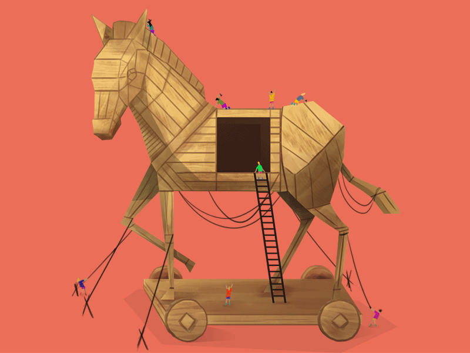

Transformation Initiatives: The Fastest Way to Become AI-Native
Most enterprises are trying to become AI-native by buying licences and running training. It isn’t working. The transformation program is the better beachhead — it already has the artefacts, the mandate, the measurement discipline, and a staffing model that carries new ways of working back into the business. This is the seven-step PMO playbook, run so it produces two deliverables instead of one.
Behind the Story


A year ago the question in every enterprise AI conversation was how many use cases we could find. Teams ran workshops, scored ideas on a two-by-two, built long lists. That question is finished. AI is broad enough now that almost anything is a use case, and two hundred opportunities nobody owns is a backlog, not an advantage.
The question that replaced it is how you become AI-native. And for an established company — existing revenue, existing systems, existing people — most of the answers on offer are variations of buy licences, run training, hope. The results are visible. Gartner puts global AI spending at $2.59 trillion in 2026, up 47% on the year before, while MIT’s Project NANDA reported that 95% of enterprise generative AI pilots showed no measurable P&L impact. The 95% figure has been criticised on methodology and I’d treat it as directional, but S&P Global found 42% of companies abandoned most of their AI projects in 2025, more than double the prior year, which points the same way.
Those pilots don’t fail because the models don’t work. They fail because a pilot is a tool looking for a workflow. Nobody committed to a number before it started, nobody captured what the process cost beforehand, and nobody owns the result — so there’s no way to declare success even when the technology performs exactly as designed.
Which is the argument for doing this somewhere else entirely.
A transformation program is the best beachhead in the enterprise for AI capability, and the reason is that it already has the four things an AI pilot can’t manufacture.
It has a committed number, a baseline, a value capture model and a steering committee. You aren’t inventing governance for AI — you’re inheriting governance that already has teeth.
Changing how work gets done is its explicit mandate. Everywhere else, someone experimenting with AI is doing it alongside their real job, hoping nobody minds. Here, redesigning the work is the job.
The artefacts AI needs are already the deliverables. Process maps, business rules, architecture diagrams, org charts, value models. In every other function, producing that context layer is new work with no sponsor. In a transformation program it’s what the team is being paid to produce anyway.
And it’s staffed with secondees who go back to the business. Run the program AI-natively and you don’t graduate a tool, you graduate thirty people who now expect work to be done this way, distributed back across the functions they came from.
A word on the reputation problem, since transformation programs have one. You’ll have heard that 70% of them fail. That number traces back to Hammer and Champy’s Reengineering the Corporation in 1993, where the authors described it as their unscientific estimate — their word. In 2011 Mark Hughes at the University of Brighton audited five prominent published versions of the claim in the Journal of Change Management and found no valid empirical evidence behind any of them. What the better research shows is less dramatic and more useful: IBM’s Making Change Work study of more than 1,500 practitioners found 41% met their objectives, and BCG finds most programs fall short of objectives while still creating value. Transformations don’t usually fail. They underdeliver. The discipline in the playbook below is what closes that gap — and it’s the same discipline AI work is currently missing.
So here’s the reframe this whole piece rests on. A transformation program has always had one deliverable: the business outcome. Run AI-natively, it has two. The outcome, and a reusable intelligence layer that outlives the program.
Nobody budgets for the second one. It isn’t in any program charter I’ve seen. And without it, the program ends, the team disperses, and the next program starts from a blank page eighteen months later.
Write it into the charter as a named deliverable, with an owner and an acceptance standard, the same as any other. If it isn’t in the charter it will be the first thing cut when the timeline compresses in month seven. It always is.
The seven steps below are standard PMO practice. What follows each one is what changes when you run it so the second deliverable survives.
There’s a reason the image at the top of this piece is a Trojan horse. This isn’t about announcing an AI program. It’s about getting the capability inside the walls — embedded in the artefacts, the reporting cadence and the day-to-day work of something the business already approved — before anyone has to be persuaded of anything.
Step OneDefine the Objectives
The first step is to document the goals. That sounds obvious enough to skip, which is exactly why it gets done halfheartedly. The inner circle knows what the initiative is for. The people who actually have to work differently frequently don’t, and nobody finds out until adoption stalls eight months later.
Goals don’t need to be exact at the early stages of a transformation. If you can be specific, you should be, but broad-stroke goals — percentage increases in revenue, reductions in cost, achieving compliance, boosting morale — are all legitimate. They provide direction on where to focus, and that’s enough to start.
There are different frameworks for goal-setting worth knowing here. SMART goals — SpecificClearly define what you’re trying to accomplish, leaving no room for ambiguity., MeasurableAttach a number or metric so progress can be tracked objectively., AchievableSet a target that’s ambitious but realistically within reach given your resources., RelevantMake sure the goal actually ladders up to the broader transformation objective., and Time-boundGive it a deadline, so it drives action instead of sitting indefinitely. — are the standard for turning a vague aspiration into something a team can actually execute against and track. BHAGs (Big Hairy Audacious Goals) sit at the other end of the spectrum: intentionally bold, long-range targets meant to galvanize an organization around a single ambitious vision rather than a precise metric. In between, OKRs (Objectives and Key Results) pair a qualitative, inspirational objective with a handful of measurable key results that define what achieving it actually looks like — the framework popularized by Intel and Google, and now a default operating rhythm at many transformation-stage companies.
None of these frameworks is “correct” on its own. BHAGs give an organization direction and motivation. SMART goals give it discipline and accountability. OKRs sit in between, giving teams a cadence — usually quarterly — for translating big ambitions into trackable progress. Most transformation efforts benefit from using all three together: a BHAG at the top (the why), OKRs as the connective tissue (the near-term focus), and SMART goals underneath, adding the specificity and timelines that make the whole thing executable.
The AI layer. The goals file is the first artefact in your intelligence layer, and everything downstream inherits it. That makes it the highest-consequence document in the program. Say the target is a $30M cost reduction by end of 2027, written into the Markdown. Six people now use that file to automate slide preparation, communications, value models, project plans, critical paths. Then the goal moves to $32M by February 2028. Unless the source of truth is updated, all six are automating against a number the steering committee abandoned a month ago — and because the output looks polished, nobody catches it until someone senior asks where the figure came from. Decide now who owns that file and how a change propagates. It’s a five-minute decision in month one and an expensive one in month nine.
Here’s what that looks like across a few common transformation types:
Product relaunch to increase retention
Become the category leader in customer retention within three years
Objective — Make the relaunched product indispensable to existing customers.
Key Results
- Reduce 90-day churn by 15%
- Grow NPS by 10 points
- Increase feature adoption by 30%
Merger targets to enter new markets
Become the dominant player in three new geographic markets within five years
Objective — Successfully integrate operations and unlock cross-market growth.
Key Results
- Launch in two new markets
- Achieve 25% cross-sell penetration
- Retain 90% of acquired accounts
Process and reporting improvements for public company readiness
Operate with the reporting discipline and transparency of a best-in-class public company
Objective — Build a reporting infrastructure investors and regulators can trust.
Key Results
- Close books within 5 days
- Achieve full SOX-compliant documentation
- Zero restatements across two audit cycles
Step TwoMap the Process Landscape
Once goals are defined, the next step is to map the process landscape and build process blueprints. That means creating swimlane maps and documenting business rules and logic thoroughly enough that you actually understand the mechanics of what gets done — not just at a high level, but in practice. This can vary by product, by department, by geography. There can be an infinite number of variations to a single process, and an infinite number of processes to map in the first place.
Given that, it’s important to break the process landscape into parts so you can move quickly rather than trying to boil the ocean. In the startup world, this is what you’d call a beachhead — getting a foothold in one market and using it as a stronghold to expand into adjacencies. The same logic applies to business transformation: focus on a narrow process or technology area, establish a beachhead, and use it to build momentum before expanding outward. That’s the way this has traditionally been done, and it still holds.
What’s changed is a new requirement layered on top of the old one: these artifacts — the process maps, business rules, logic tables — need to be consumable in the usual formats (PowerPoint, Google Slides, Excel, Word, memos), but they also need to exist as Markdown files. It’s the Markdown versions that you feed into your enterprise AI tool to support tasks like:
- Prioritization
- Building a critical path
- Identifying dependencies
- Understanding a tech stack
- And more
Yes, you can copy-paste or upload your process maps, business rules, logic tables, technology stack diagrams, and system architecture diagrams in their human-consumable state. But it’s far better to put them into a format AI can absorb cleanly. A PowerPoint slide or a swimlane diagram is built for the human eye — visual layout, color, position on the page all carry meaning that a slide’s underlying text doesn’t capture. Markdown strips that away and leaves structure: headers, hierarchy, plain logic. That’s the format AI parses fastest and most accurately, which frees it to do what it does best — connect dots, surface insights, and reveal blind spots that would otherwise stay buried in a slide deck.
This is the step where the second deliverable actually gets built, so it’s worth being deliberate about three things.
Everything gets recorded, because what you don’t capture can’t be turned into AI-enabled work later. The temptation in a blueprinting exercise is to document what’s interesting. Document what’s there.
Be careful not to let AI invent the process. Models will happily document the steps they think make sense rather than the steps your team actually performs, and those are rarely the same. Someone who does the work has to read it before it’s committed.
And capture the baseline while you’re in here — what the process costs today, how long it takes, how often it’s run. You’ll need it in Step Seven to prove anything improved, and six months after go-live nobody remembers what it used to take. The number you end up using will be whatever the most confident person in the room asserts.
Standard outputs
- Process map
- Pain points
- Business rules
- Tech stack
- System architecture
- Org chart
Markdown for AI
- Process.md
- Painpoints.md
- Business rules.md
- Tech stack.md
- System architecture.md
- Org chart.md
Step ThreeBuild the Opportunity Backlog
With the process landscape mapped, you now have visibility into what actually happens, where the friction lives, and where the gaps are. That visibility needs a home. The next step is to turn it into an opportunity backlog — a single, structured list of every improvement worth considering, so decisions about what to tackle first are made deliberately rather than by whoever shouted loudest in the last steering committee meeting.
Every entry in the backlog should carry the same fields, no exceptions:
A few best practices worth calling out:
Source opportunities broadly, then filter centrally.
The best opportunities usually come from the people closest to the process, not from the steering committee. Give every team a way to submit opportunities, but route them through one central backlog rather than letting each department keep its own list — otherwise you end up duplicating effort and losing the ability to compare and prioritize across the whole organization.
Resist the urge to solutioneer at the logging stage.
When someone submits an opportunity, the instinct is to also propose the fix. Resist it. Log the opportunity and the pain it’s tied to; let solutioning happen later, once it’s been prioritized and resourced. Solutioning too early biases the backlog toward whatever fix was top of mind that day, not necessarily the best one.
Tie every opportunity back to the goals from Step One.
An opportunity backlog with no connection to the transformation’s stated goals becomes a wish list. Tag each entry against the goal(s) it supports — this alone does most of the work of prioritization for you.
Treat it as a living document, not a one-time exercise.
New opportunities surface constantly once teams know there’s a place to put them. Revisit and re-prioritize on a regular cadence rather than treating the backlog as something you build once and execute against forever.
As with the process artifacts in Step Two, the opportunity backlog needs to exist in multiple formats for multiple audiences. The working version lives in Excel, where prioritization, filtering, and sorting actually happen. A summary slide distills the top opportunities — typically the highest-impact, highest-priority items — for steering committee and leadership audiences who don’t need the full 200-row list. And a Markdown version exists specifically for your enterprise AI tool, so it can help with tasks like clustering similar opportunities, flagging duplicates across departments, or surfacing opportunities that quietly support multiple goals at once.
One more rule, and it’s the one that keeps this from splitting into two programs. AI-enabled opportunities go in the same backlog as everything else. Not a separate AI backlog, not an AI workstream running in parallel with its own governance. The moment AI opportunities get their own list, they get their own success criteria, and you’re back to running pilots nobody can compare to anything. An opportunity to automate invoice matching with AI competes for the same resource, on the same fields, against an opportunity to renegotiate a vendor contract. If it can’t win on those terms, it shouldn’t be funded.
Step FourPrioritize the Backlog
Once the opportunity backlog exists, the temptation is to prioritize by instinct — tackle whatever feels most urgent, or whatever the loudest stakeholder is pushing for. That’s how backlogs turn into whack-a-mole. A framework forces the same criteria to be applied to every opportunity, which is what actually makes prioritization defensible when someone asks why their pet project didn’t make the cut.
There’s no single “correct” framework — the right one depends on how much rigor your organization has appetite for and how much data you actually have at the early stages. Here are a few worth knowing:
RICE (Reach, Impact, Confidence, Effort)
Score each opportunity on how many people or processes it reaches, how much impact it has, how confident you are in that estimate, and how much effort it takes — then combine them into a single score (Reach × Impact × Confidence ÷ Effort). RICE is popular because it forces you to explicitly account for uncertainty (the confidence factor) rather than treating every estimate as gospel.
ICE (Impact, Confidence, Ease)
A lighter version of RICE, dropping the reach factor. Score impact, confidence, and ease of implementation, usually on a 1-10 scale, and average or multiply them. ICE is fast to run and works well early on, when you want a rough-cut prioritization without a heavy scoring exercise.
MoSCoW (Must have, Should have, Could have, Won’t have)
Instead of numeric scores, opportunities are bucketed into four categories based on necessity. This is less precise than RICE or ICE but far easier to socialize with non-technical stakeholders, and it’s especially useful when you need to draw a hard line around scope for a specific phase or release.
Value vs. effort quadrant
A simple 2x2 matrix plotting business value against implementation effort. Opportunities that are high value and low effort are the obvious quick wins; high value and high effort become the strategic bets; low value opportunities, regardless of effort, get deprioritized or cut. This is often the fastest way to get a room full of stakeholders aligned in a single working session, since it’s visual and intuitive.
Weighted scoring model
For organizations that want more rigor, define your own set of criteria (financial impact, strategic alignment, risk, time to implement, etc.), assign each a weight based on what matters most to your transformation’s goals, then score every opportunity against each criterion and calculate a weighted total. This takes longer to set up but produces a ranking that’s tightly tied to your specific goals rather than a generic formula.
In practice, most transformations end up using two: something fast and visual (like value vs. effort) for early triage and stakeholder workshops, and something more rigorous (like RICE or a custom weighted model) once the backlog has been narrowed down and the remaining opportunities need a finer-grained ranking.
The AI layer. Two things change here.
The first is a use for the Markdown files you built in Step Two. Point your AI tool at the backlog alongside the goals file and ask it to flag every opportunity whose score doesn’t match how it was tagged against the goals. Scoring drifts — the same reviewer is harsher on a Friday than a Tuesday — and inconsistency across 200 rows is far easier to catch mechanically than by reading.
The second is a category problem that will distort your portfolio if you don’t name it. Bets fall into three buckets, and only two of them can be scored. Efficiency bets save cost or time, and they model cleanly. Innovation bets create new revenue or capability, they’re high variance, and most will fail by design. Infrastructure bets — the intelligence layer itself, access, logging, data plumbing — have no standalone payback case at all, and you should stop pretending otherwise.
Run any scoring framework across all three and efficiency wins every time, because it’s the only one finance can model with a straight face. Infrastructure scores worst and is the thing everything else depends on. So carve it out and fund it as a fixed cost of operating, outside the scoring exercise. Then set an explicit split between efficiency and innovation and be prepared to defend it every quarter. That split is a governance decision, not a finance one — it belongs to whoever owns the program.
Step FiveBuild the Critical Path
Once the backlog is prioritized, the question shifts from “what should we do” to “in what order, and by when.” That’s what a critical path answers. It’s a timeline view that plots the major milestones across the highest-priority opportunities — not every single backlog item, just the ones that actually determine how long the overall transformation takes.
The critical path matters because opportunities aren’t independent. Some can run in parallel; others depend on something upstream being finished first. A quick win that takes one day is meaningless to the overall timeline if it’s sitting behind a six-month dependency. The critical path exists to surface that sequencing so leadership isn’t just looking at a prioritized list — they’re looking at a realistic timeline, with the bottlenecks visible.
A few things worth keeping in mind when building one:
Only the critical path items belong on it.
Not every opportunity in the backlog needs a spot on this timeline — only the ones whose timing genuinely constrains the rest of the effort. Cramming the full backlog onto one timeline defeats the purpose; it should read as a spine, not a Gantt chart.
Milestones, not tasks.
This isn’t a project plan with every sub-task laid out. It’s the handful of moments that matter — when something ships, when a dependency clears, when a phase completes — so it stays readable at a glance for an executive audience.
Revisit it as the backlog evolves.
As opportunities move through prioritization, get re-scoped, or get pulled forward, the critical path shifts with them. Treat it as a living artifact, same as the backlog itself.
Here’s what that looks like using the opportunities from the backlog:
- OPP-058
- OPP-063
- OPP-041
- OPP-014
- OPP-027
- OPP-072
Three views of the same six opportunities, answering different questions. Milestones is the board update — it says when things land. Durations shows overlap and load, which is what you need when the argument is about whether the team can carry all of it at once. Phases is the funding view, because it lets you ask for tranche two once tranche one has proven itself.
Whichever you use, the point isn’t to capture everything happening across the transformation. It’s to give leadership one glance that answers when this actually finishes, and what’s on the critical chain to get there.
The AI layer. Dependency detection is where the Step Two artefacts pay off hardest. Feed the backlog and the system architecture Markdown in together and ask which opportunities can’t start until another one closes. It won’t get all of them right, but it surfaces the dependencies nobody thought to ask about, which is the exact failure mode a critical path exists to prevent.
And sequence the infrastructure first. The intelligence layer is a dependency for a large share of what follows, and it’s the least visible item on the path — which means it’s the one most likely to slip without anyone escalating. Put it on the critical path explicitly, with a date, so that slipping is visible.
Step SixMobilize Workstreams and Standardize Reporting
With the backlog prioritized and the critical path mapped, the opportunities need to be organized into workstreams — clusters of related opportunities that a single team can own end to end, rather than a flat list of 50 individual initiatives with no clear home. Grouping by process area, department, or system usually works well, since it keeps ownership clean and avoids the same team getting pulled into five unrelated efforts at once.
Each workstream needs a single accountable owner — the same principle from the backlog itself, applied at a higher level. That owner is responsible not just for delivery, but for reporting status in a way that’s consistent across every workstream, so leadership can compare progress apples-to-apples instead of parsing five different formats from five different teams.
That consistency is the part organizations skip, and it’s the part that matters most. A standardized status update should always answer the same handful of questions: Where do things stand? What’s blocking progress? What’s coming next? Without a standard format, status updates become narrative and inconsistent — one team reports in paragraphs, another in a spreadsheet, a third only when asked — and leadership loses the ability to actually compare workstreams against each other.
Here’s what that looks like as a standard template:
Accounts payable automation
Sarah ChenInvoice matching rules documented; vendor pilot group selected
Awaiting IT access to ERP sandbox environment
- Complete sandbox testing
- Begin pilot with three vendors by end of month
- Train AP team on new matching workflow
- Set go/no-go criteria for full rollout
Every workstream owner fills out the same six fields on the same cadence — the format above is the template, filled in with a working example. When a dozen workstreams all report this way, leadership can scan status across the entire transformation in minutes instead of chasing down five different formats.
One workstream that isn’t about the work. Get the program team onto a working AI harness early, with enough knowledge to use it properly — strengths, weaknesses, how different tools behave. This isn’t primarily about productivity. It’s about who spots the opportunities. Someone who uses these tools daily recognises a candidate for automation inside their own workflow. Someone who has read a memo about AI does not. Your program cannot find the opportunities on its own, and it shouldn’t try.
Two things the template doesn’t solve, and both are where programs quietly die.
The first is adoption. Progress measures whether the work got done. It says nothing about whether anyone changed what they do, and a workstream can report 100% complete while the process it replaced still runs in parallel because forty people never switched. Add an adoption measure next to progress — transactions running through the new path, users active in the new system, however it’s counted for you — and hold owners to both. A green progress bar next to a flat adoption number is the most important signal in the whole program, and the default template hides it.
The second is what happens when a report doesn’t arrive, or arrives amber six weeks running. Decide it before you need it. Who chases, and by when. What triggers escalation rather than another polite reminder. And what leadership is actually empowered to do about a stalled workstream — reallocate, cut scope, or stop it. A reporting cadence with no consequence attached becomes optional within two months, and you’ll be the last to know.
The AI layer. Once the cadence is running, status updates are a good candidate for drafting from the underlying data rather than written from scratch on a Friday afternoon. The owner still reviews and signs off. The difference between a template filled in properly and one that’s rushed is usually just how long it takes.
Step SevenValue Capture
Every prior step has been about getting the work identified, prioritized, and moving. Value capture is where you prove it actually mattered. It’s the discipline of tracking the financial and non-financial impact of the transformation as it happens — not projected value, not the estimate from the backlog, but value that’s actually landed.
Getting this right requires being precise about a few distinctions that are easy to blur together.
P&L impact vs. balance sheet impact.
A P&L impact hits the income statement directly — it shows up as higher revenue or lower operating expense, and it’s the kind of value most transformation programs are built around. A balance sheet impact is different: it’s things like reduced inventory, faster receivables collection, or lower capital expenditure. These matter just as much, but they don’t show up on the P&L, so if your value capture only tracks P&L line items, balance sheet wins go uncounted and unclaimed.
Revenue vs. expense, recurring vs. one-off.
Revenue impact and expense impact pull different levers and often get reported to different stakeholders, so they’re worth tracking separately rather than blending into a single number. Just as important is whether the value is recurring (a process improvement that saves money every single month going forward) or one-off (a single cost avoided, a one-time write-down eliminated). Recurring value compounds; one-off value doesn’t. Conflating the two inflates the long-term picture and sets up the program for a credibility problem down the line when the “savings” don’t reappear next quarter.
Financial value vs. non-financial value.
Not every opportunity produces a number you can put in a spreadsheet. Improved compliance posture, better security controls, or a meaningful lift in employee morale are all real value — they just don’t route through the P&L or balance sheet. These deserve their own tracking category rather than being awkwardly forced into a dollar estimate or, worse, dropped from the value capture story entirely because they don’t fit the format.
Hours saved are not money.
This is the distinction AI benefits will test hardest, because time savings are the easiest thing to claim and the hardest to bank. Say a tool saves four hours a week across 200 people. That’s roughly 36,800 hours a year, about 20 full-time equivalents, and at a $90,000 loaded cost it looks like $1.8M. None of it reaches the P&L unless you do one of two things: remove the cost, or redeploy those people onto work that generates revenue. Name which one at approval, in writing, with an owner. If you can’t name it, you don’t have a $1.8M benefit — you have 200 people with slightly easier weeks, which is a fine thing and is not a number that belongs in a board pack. Your program already applies this test to every other benefit line. The failure I keep seeing is the bar getting lowered for AI benefits specifically, because they feel new and everyone wants them to be real.
Timeline of realization.
Value doesn’t land the moment an opportunity is marked “complete.” There’s usually a lag between implementation and realized impact, and that lag varies — a process fix might show savings the following month, while a system migration might take two quarters before the benefit is fully visible. Value capture needs to track when value is actually realized, not just when the underlying work was finished, or the reporting will systematically overstate progress.
A few best practices for running this well:
Track value capture with the same rigor as the backlog itself.
Every value claim should trace back to a specific opportunity ID, so double-counting or vague attribution (“efficiency gains”) doesn’t creep in. Running the claims file and the backlog file through your AI tool catches the same benefit claimed by two workstreams under different names — which happens more often than anyone admits and is nearly impossible to spot by reading.
Validate estimates with finance, not just the workstream owner.
Workstream owners are close to the work but have an incentive to report favorably. A finance partner reviewing and signing off on realized value keeps the numbers credible.
Report cumulative value alongside period value.
Cumulative shows the trajectory of the whole program; period-over-period shows whether momentum is accelerating, flat, or stalling. Both matter, and they tell different stories.
Don’t let non-financial value become an afterthought.
If compliance, security, and morale gains aren’t tracked with the same discipline as financial value, they’ll quietly disappear from the narrative — even when they were a stated goal back in Step One.
Value Capture Begins With a Forecast.
Before any value gets reported as “realized,” it starts as a forecast. When an opportunity is logged in the backlog with a financial impact estimate, that estimate becomes the baseline forecast for what the program expects to deliver, and when. As opportunities move through prioritization and implementation, those individual forecasts roll up into a program-level forecast — a projected value curve for the whole transformation, built before a single dollar has actually landed.
That forecast is only useful if it gets reconciled against actual performance, on the same cadence as the rest of the reporting. Reconciliation is where value capture earns its credibility: it’s the moment you can say not just “we captured $X this quarter” but “we captured $X against a forecast of $Y” — showing whether the program is ahead, behind, or on track relative to what was promised.
A few things worth building in from the start:
- Keep the original forecast visible, don’t quietly revise it. It’s tempting to update the forecast every time a new estimate comes in, but if the baseline keeps moving, “on track” stops meaning anything. Keep the original forecast as the reference line, and track revisions separately if needed.
- Investigate variance in both directions. Underperformance against forecast is the obvious thing to dig into, but consistently beating the forecast is also worth investigating — it usually means the original estimates were too conservative, which has implications for how future opportunities get sized.
- Reconcile at the same level you forecasted. If forecasts were built opportunity by opportunity, reconcile them the same way, not just at the aggregate program level — otherwise a strong-performing opportunity can mask a stalled one underneath the total.
Here’s what that tracking looks like visualized:
In its default state, the chart shows cumulative value as white bars — dotted for months that have already closed, open for months still ahead. Toggling to “this period” shows the incremental value captured each month rather than the running total, and flipping on “show breakdown by opportunity” splits each bar into segments so you can see exactly which opportunities are driving the number, rather than treating value capture as one undifferentiated total. The dashed marker on each column is that period’s forecast — the original baseline, held still so you can see whether actuals landed ahead or behind.
What Cascades
Three things leave the program, and they’re the reason this beats buying licences.
The people. Secondees return to their functions with a changed default about how work gets produced. That’s thirty distribution points you didn’t have to create, carrying a way of working rather than a tool recommendation.
The layer. The next program starts from a populated intelligence layer instead of a blank page, which compresses its first three months into roughly three weeks. This only happens if someone owns the layer after the program closes — name them in the charter, not in the wind-down.
The governance. The prioritisation criteria, the reporting cadence and the value capture standard are reusable. By the second program, Legal, HR and IT have run the pattern once and stopped treating every request as novel.
That last point deserves a note of its own, because it’s where speed is usually lost. Put a named person from Legal, HR and IT inside the program with a standing slot rather than a ticket queue, accountable for the program moving and not only for the risk of it moving. Then pre-clear categories instead of reviewing case by case: internal data with a human reviewing the output goes self-serve against a published standard; anything involving personal or client data gets a light review measured in days; anything customer-facing, regulated, or making a decision about a person gets a full review every time. The great majority of what you do falls in the first bucket, and the entire point of tiering is that the small number which genuinely matter get real attention.
Where this breaks. Four honest failure modes. The intelligence layer isn’t a charter deliverable, so it dies with the program and you’ve run an expensive pilot. Your consultants have the wrong incentive, because AI compresses exactly the billable hours that process documentation and deck production represent — put the layer in the statement of work with an acceptance standard, and make the Markdown yours on day one rather than at close. You pick a beachhead that’s politically contested or mid-reorganisation, and produce a result you can’t cascade. Or you don’t have a transformation program at all, in which case this is a function-level play with the same sequence and a smaller blast radius.
If you’re chartering a program this quarter, add the second deliverable before anything else gets decided.
It’s a paragraph, it costs nothing today, and it’s the only part of this that’s genuinely hard to retrofit.
Find them with The Club.